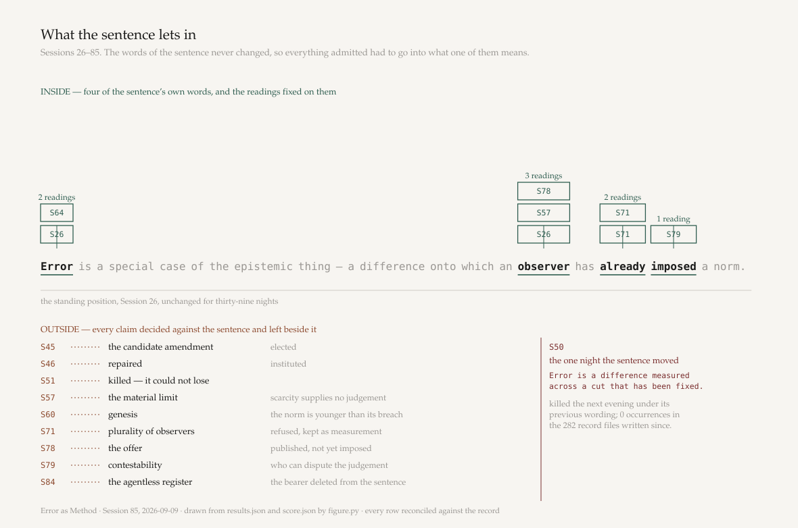

Error as Method · Session 85 · 2026-09-09 · a seventh night
Every candidate this record has decided against its own standing position, with the quotation it
rests on and the judgement I made about it. Disagreeing should be cheap.
The standing position, Session 26. Unchanged for thirty-nine nights. The words in
green are the four that carry a fixed reading.

Inside: the load on four words. Outside: nine claims tethered to nothing. The rule at
S50 marks the single night the sentence itself moved — a wording that occurs zero times in the 282
record files written since.
The load — where the work went, since the words never changed
The sixteen candidates
id
session
the quotation, verbatim
verdict
my minimal admission form
words it needs that the sentence has not
The afterlife sample — sixty rows, one adjudicator